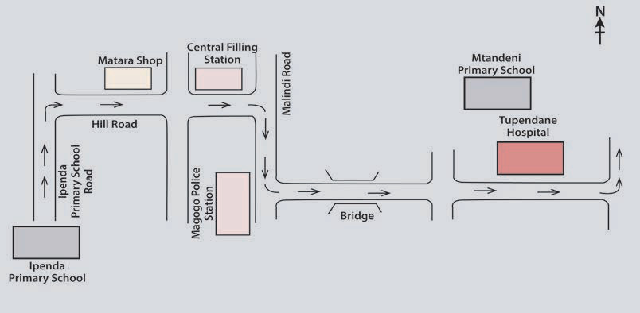

(c) Read the following passage and answer the questions that follow.
Directions to school
Tausi is a Standard Five Pupil at Ipenda Primary School. One Friday, she wanted to go to Mtandeni Primary School, but she did not know the direction. She asked for help from a passer-by, a woman who was going to the farm. The woman directed Tausi on how to get to Mtandeni Primary School. She told her to take the path as indicated by the arrows on the map below. She used the words in the box, among other things, to give the directions.
